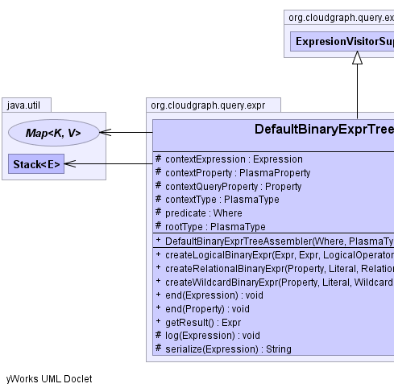
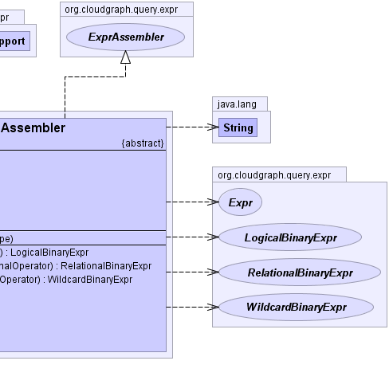

public abstract class DefaultBinaryExprTreeAssembler extends ExpresionVisitorSupport implements ExprAssembler
visits (traverses)
the given predicate expression syntax tree depth-first
using an adapted shunting-yard algorithm and assembles a
resulting binary tree structure. In typical usage scenarios, a single
expression tree is assembled once, and then used to evaluate any
number of graph edge or other results based on a given context.
The adapted shunting-yard algorithm in general uses a stack of operators and operands, and as new binary tree nodes are detected and created they are pushed onto the operand stack based on operator precedence. The resulting binary expression tree reflects the syntax of the underlying query expression including the precedence of its operators.
The use of binary expression tree evaluation for post processing of graph edge results is necessary in columnar data stores, as an entity with multiple properties is necessarily persisted across multiple columns. And while these data stores provide many useful column oriented filters, the capability to select an entity based on complex criteria which spans several columns is generally not supported, as such filters are column oriented. Yet even for simple queries (e.g. "where entity.c1 = 'foo' and entity.c2 = 'bar'") column c1 and its value exists in one cell and column c2 exists in another table cell. Since columnar data store filters cannot generally span columns, both cells must be returned and the results post processed within the context of the binary expression tree.
Subclasses may provide alternate implementations of ExprAssembler
which create binary expression tree nodes with specific evaluation
behavior.
Expr|  |  |
| Modifier and Type | Field and Description |
|---|---|
protected Expression |
contextExpression |
protected PlasmaProperty |
contextProperty |
protected Property |
contextQueryProperty |
protected PlasmaType |
contextType |
protected Where |
predicate |
protected PlasmaType |
rootType |
| Constructor and Description |
|---|
DefaultBinaryExprTreeAssembler(Where predicate,
PlasmaType rootType)
Constructs an assembler based on the given predicate
and graph edge type.
|
| Modifier and Type | Method and Description |
|---|---|
LogicalBinaryExpr |
createLogicalBinaryExpr(Expr left,
Expr right,
LogicalOperator operator)
Creates and returns a logical binary expression based on the
given terms and logical
operator.
|
RelationalBinaryExpr |
createRelationalBinaryExpr(Property property,
Literal literal,
RelationalOperator operator)
Creates and returns a relational binary expression based on the
given terms and relational
operator.
|
WildcardBinaryExpr |
createWildcardBinaryExpr(Property property,
Literal literal,
WildcardOperator operator)
Creates and returns a wildcard binary expression based on the
given terms and wildcard
operator.
|
void |
end(Expression expression)
Process the traversal end event for a query
expression consuming
each term in the expression. |
void |
end(Property property)
Process the traversal end event for a query
property
within an expression setting up
context information for the endpoint property and its type, as well as
physical column qualifier name bytes which are set into the contextQueryProperty
physical name bytes. |
Expr |
getResult()
Returns the binary expression tree result
|
protected void |
log(Expression expr) |
protected java.lang.String |
serialize(Expression expr) |
getChildExpressionCount, getChildExpressions, getLogicalOperatorCount, hasChildExpressions, hasWildcardprotected Where predicate
protected PlasmaType rootType
protected PlasmaType contextType
protected PlasmaProperty contextProperty
protected Property contextQueryProperty
protected Expression contextExpression
public DefaultBinaryExprTreeAssembler(Where predicate,
PlasmaType rootType)
predicate - the predicateedgeType - the graph edge type which is the type for the
reference property within the graph which represents an edgerootType - the graph root typepublic Expr getResult()
public void end(Expression expression)
expression consuming
each term in the expression.org.plasma.query.visitor.DefaultQueryVisitor#end(org.plasma.query.model.Expression)public RelationalBinaryExpr createRelationalBinaryExpr(Property property, Literal literal, RelationalOperator operator)
createRelationalBinaryExpr in interface ExprAssemblerproperty - the property termliteral - the literal termoperator - the relational operatorpublic WildcardBinaryExpr createWildcardBinaryExpr(Property property, Literal literal, WildcardOperator operator)
createWildcardBinaryExpr in interface ExprAssemblerproperty - the property termliteral - the literal termoperator - the wildcard operatorpublic LogicalBinaryExpr createLogicalBinaryExpr(Expr left, Expr right, LogicalOperator operator)
createLogicalBinaryExpr in interface ExprAssemblerproperty - the property termliteral - the literal termoperator - the logical operatorpublic void end(Property property)
property
within an expression setting up
context information for the endpoint property and its type, as well as
physical column qualifier name bytes which are set into the contextQueryProperty
physical name bytes.
for the current expression.org.plasma.query.visitor.DefaultQueryVisitor#end(org.plasma.query.model.Property)protected void log(Expression expr)
protected java.lang.String serialize(Expression expr)
CloudGraph® is a registered trademark of TerraMeta Software, Inc. Copyright © 2014 - All Rights Reserved.